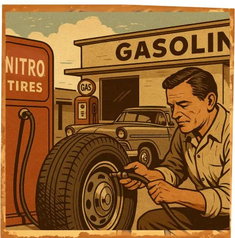
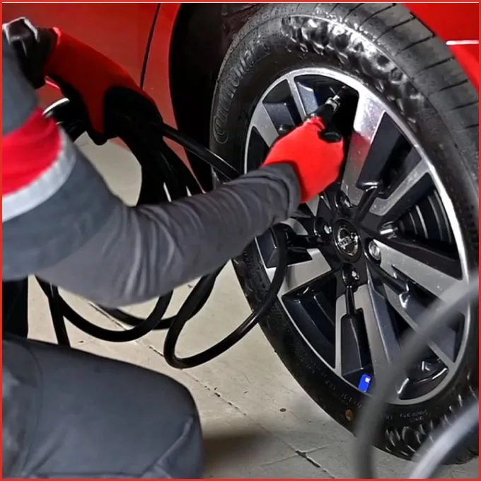
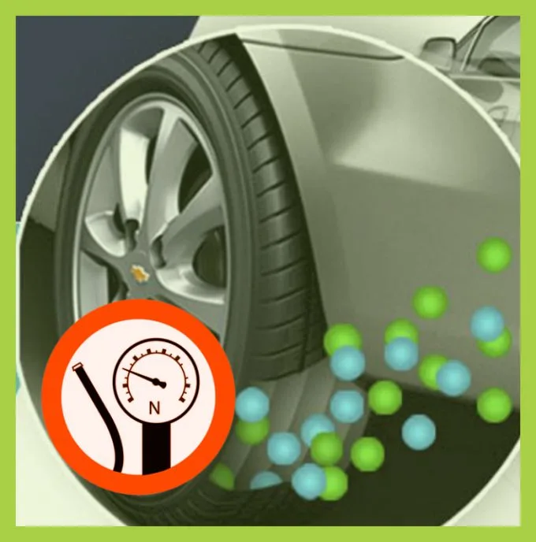

Cauchos con Nitrógeno: Más Durabilidad, Menos Mantenimiento, ¡Mejor Rendimiento!
Publicado el

En el mundo automotriz, la tecnología avanza para ofrecer soluciones que mejoren la seguridad y el rendimiento de los vehículos. Uno de los cambios más innovadores en el mantenimiento de los cauchos es la carga de nitrógeno, una alternativa superior al aire tradicional. En Corcauchos, en la Av. Lara desde 2006, te brindamos ese servicio, y aquí queremos explicarte por qué el nitrógeno ayuda a cuidar tus cauchos.
¿Qué es la carga de nitrógeno en los cauchos?
La carga de nitrógeno consiste en inflar los neumáticos con este gas en lugar de aire comprimido. A diferencia del aire común, que contiene oxígeno y humedad, el nitrógeno es un gas seco y menos reactivo. Esto significa que su aplicación en los cauchos conlleva una serie de beneficios que prolongan su vida útil y mejoran la experiencia de manejo.


Beneficios de inflar los cauchos con nitrógeno
- Mayor estabilidad de presión El nitrógeno tiene moléculas más grandes que el oxígeno, lo que reduce su tasa de escape. Esto se traduce en una presión más estable por más tiempo, evitando la necesidad de revisiones constantes y mejorando la eficiencia del vehículo.
- Menos desgaste y mayor vida útil La presión estable reduce la fricción y el sobrecalentamiento, lo que minimiza el desgaste irregular de los cauchos y prolonga su durabilidad.
- Mejora en el rendimiento y ahorro de combustible Mantener la presión adecuada en los neumáticos reduce la resistencia al rodamiento, optimizando el consumo de combustible y mejorando el desempeño del vehículo.
- Mayor seguridad en la conducción Una presión uniforme brinda un mejor agarre en carretera y evita deformaciones que pueden comprometer la seguridad en viajes largos o en condiciones difíciles.
- Protección contra la oxidación A diferencia del aire tradicional, el nitrógeno no contiene humedad, lo que protege el interior de los cauchos y las partes metálicas de la llanta contra la oxidación y corrosión.
¿Cuándo deberías optar por nitrógeno?
Si buscas mayor seguridad, rendimiento y durabilidad en tus cauchos, la carga de nitrógeno es una opción recomendable. Es especialmente útil en vehículos de alto desempeño, flotas comerciales y autos que recorren largas distancias con frecuencia.
El Impacto del Nitrógeno en la Conducción Diaria
Cuando pensamos en el mantenimiento de nuestros vehículos, solemos enfocarnos en el motor, el aceite o la batería. Sin embargo, los cauchos juegan un papel fundamental en la seguridad y eficiencia de cualquier automóvil. La carga de nitrógeno ha demostrado ser una solución innovadora que marca una gran diferencia en el desempeño de los neumáticos, ofreciendo beneficios que van más allá de una simple recarga de aire
CORCAUCHOS: Tu Aliado de los Cauchos en Barquisimeto
En CORCAUCHOS, nos especializamos en ofrecer los mejores cauchos y servicios de mantenimiento para optimizar la vida útil de tu vehículo. Consulta con nuestros expertos y descubre cómo la carga de nitrógeno puede hacer la diferencia en tu conducción diaria.
¿Listo para mejorar el rendimiento de tus cauchos? ¡Visítanos en Barquisimeto y experimenta la calidad y seguridad del nitrógeno!

¿Necesitas este servicio en Barquisimeto? Escríbenos y te atendemos.
Escríbenos por WhatsApp